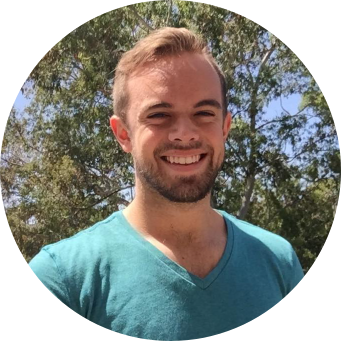

Hi! I'm Dylan, a dedicated private tutor with a passion for helping students of all levels build confidence and achieve academic success. I’ve worked with learners of all ages - from elementary school to college - and there's no subject I'm not willing to take up to help a student in need.
I have a bachelor's in Chemistry from UCSD, a bachelor's in Computer Science from CU Boulder, and I've worked as a software developer for the past two years. In my free time I like to learn about history, play games, and read the classics. What I'm trying to say is that I'm a huge nerd, and have a lot of varied experience I can use to help you.
My approach is rooted in patience, clarity, and adaptability. Every student learns differently, so I tailor each session to your individual goals and learning style.
1-on-1 Tutoring: $30/hour
Group Sessions: $60/hour (no additional cost per student, 4 students max per group)
Online or In-Person: Flexible options available
Contact me to schedule a free 15-minute consultation.
Note: if the need arises, we can work to schedule lessons in my home in Murrieta, though preferably this would be a last resort."An amazing tutor who helped me boost my math grade from a C to an A!" — Jane D.
"Very patient and great at explaining difficult concepts." — Mark R.